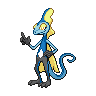

インテレオンのデータ
基本ステータス
もちもの・メダル・条件付き効果なし。割合の値は％です。待ち時間は短縮率、移動速度はゲーム内の値です。
| Lv | HP | 攻撃 | 防御 | 特攻 | 特防 | 移動速度 | 急所率 | 待ち時間 | HP吸収率 | 通常攻撃の速さ | 貫通 |
|---|---|---|---|---|---|---|---|---|---|---|---|
| 1 | 3200 | 20 | 35 | 100 | 25 | 3700 | 5 | 0 | 0 | 10 | 0 |
| 2 | 3248 | 21 | 38 | 111 | 28 | 3700 | 5 | 0 | 0 | 11 | 0 |
| 3 | 3305 | 23 | 42 | 125 | 32 | 3700 | 5 | 0 | 0 | 12.2 | 0 |
| 4 | 3374 | 25 | 47 | 142 | 37 | 3700 | 5 | 0 | 0 | 13.64 | 0 |
| 5 | 3625 | 32 | 64 | 202 | 55 | 3850 | 5 | 5 | 0 | 18.88 | 0 |
| 6 | 3725 | 35 | 71 | 226 | 62 | 3850 | 5 | 5 | 0 | 20.97 | 0 |
| 7 | 4180 | 48 | 101 | 335 | 94 | 4000 | 5 | 5 | 0 | 30.47 | 0 |
| 8 | 4324 | 52 | 111 | 369 | 104 | 4000 | 5 | 5 | 0 | 33.47 | 0 |
| 9 | 4496 | 57 | 122 | 410 | 116 | 4150 | 10 | 5 | 0 | 37.07 | 0 |
| 10 | 4703 | 63 | 136 | 459 | 131 | 4150 | 10 | 5 | 0 | 41.39 | 0 |
| 11 | 4951 | 70 | 153 | 518 | 148 | 4300 | 10 | 10 | 0 | 46.58 | 0 |
| 12 | 5249 | 78 | 173 | 589 | 169 | 4300 | 10 | 10 | 0 | 52.81 | 0 |
| 13 | 5606 | 88 | 197 | 674 | 194 | 4300 | 10 | 10 | 0 | 60.28 | 0 |
| 14 | 6035 | 100 | 226 | 777 | 224 | 4300 | 10 | 10 | 0 | 69.24 | 0 |
| 15 | 6550 | 115 | 260 | 900 | 260 | 4300 | 10 | 10 | 0 | 80 | 0 |

インテレオン急所・HP吸収などの仕様
通常攻撃・みずでっぽう・ねらいうち・アクアブレイクが急所の対象です。急所ダメージは通常の200%ではなく250%です。
Lv5から、特攻系のダメージを与えたとき、その12.5%を回復する効果を得ます。通常攻撃のHP吸収率とは別の情報です。
通常攻撃
効果・条件の説明
3回目が強化攻撃になり、この攻撃の急所率が20%上がります。
わざ1
なみだめ
効果・条件の説明
相手の攻撃・特攻を3秒間20%下げます。自分は急所カウンターを1得て、移動速度が3秒間40%上がり、時間とともに上昇量が下がります。
とどめばり
効果・条件の説明
鋭い針を飛ばして攻撃し、急所カウンターを得ます。針は最初の相手か壁で止まります。
通常版の効果・条件
ポケモンか壁に当てると急所カウンターを2個得ます。壁へ当てた場合は待ち時間が50%短くなり、刺さった壁まで移動してカモフラージュ状態になります。
とどめばり+
効果・条件の説明
強化後の変更点：待ち時間が1秒短くなります。
通常版の効果・条件
ポケモンか壁に当てると急所カウンターを2個得ます。壁へ当てた場合は待ち時間が50%短くなり、刺さった壁まで移動してカモフラージュ状態になります。
アクロバット
効果・条件の説明
指定方向へ滑空します。相手か壁に当たると、もう1回滑空できます。
通常版の効果・条件
相手への命中で移動速度を2秒間30%下げます。滑空するたびに急所カウンターを1個得て、相手か壁で跳ね返るとアクアブレイクの残り待ち時間が40%短くなります。アクアブレイクの連射中にも使用できます。
アクロバット+
効果・条件の説明
強化後の変更点：最初の滑空の距離が伸びます。
通常版の効果・条件
相手への命中で移動速度を2秒間30%下げます。滑空するたびに急所カウンターを1個得て、相手か壁で跳ね返るとアクアブレイクの残り待ち時間が40%短くなります。アクアブレイクの連射中にも使用できます。
わざ2
みずでっぽう
効果・条件の説明
水を撃ち、当たった相手にダメージを与えます。
ねらいうち
効果・条件の説明
狙いを定めてから撃ちます。相手までの距離が遠いほどダメージが増え、相手の特防を無視する割合も近距離15%・中距離20%・遠距離25%と増えます。
通常版の効果・条件
最大6秒間狙え、1.25秒で弾のばらつきが最小になります。最大3回分を蓄えられ、連続使用には1.5秒以上の間隔が必要です。急所に当たるわざで、特防の無視はすりぬけスプーンの効果と加算されます。
ねらいうち+
効果・条件の説明
強化後の変更点：保有回数の回復時間が1秒短くなります。
通常版の効果・条件
最大6秒間狙え、1.25秒で弾のばらつきが最小になります。最大3回分を蓄えられ、連続使用には1.5秒以上の間隔が必要です。急所に当たるわざで、特防の無視はすりぬけスプーンの効果と加算されます。
アクアブレイク
効果・条件の説明
指定した相手へ水の弾を8発連射します。連射中は移動速度が下がります。
攻撃対象の制限
アクアブレイクの水弾は最初に当たったポケモンにだけダメージを与え、指定相手以外にも遮られる。
通常版の効果・条件
通常版は1.7秒間に8発を撃ち、その間は自分の移動速度が40%下がります。同じ相手へ5発当てると、その相手に自分が与えるダメージが3秒間20%増えます。
通常版の効果・条件
アクロバットで滑空している間も、水の弾を撃ち続けられます。
アクアブレイク+
効果・条件の説明
強化後の変更点：発射する弾が10発になります。
攻撃対象の制限
アクアブレイクの水弾は最初に当たったポケモンにだけダメージを与え、指定相手以外にも遮られる。
通常版の効果・条件
通常版は1.7秒間に8発を撃ち、その間は自分の移動速度が40%下がります。同じ相手へ5発当てると、その相手に自分が与えるダメージが3秒間20%増えます。
通常版の効果・条件
アクロバットで滑空している間も、水の弾を撃ち続けられます。
ユナイトわざ
ユナイトわざ使用後の共通強化
最大HPの20%のシールド、移動速度30%上昇、通常攻撃速度35%上昇（6秒）
アズールスパイビジョン
効果・条件の説明
10.5秒間、近くの草むらやステルス中の相手を見つけられます。効果中は急所率が2倍になり、1秒ごとに急所カウンターを1得ます。
特性
スナイパー
効果・条件の説明
効果・条件
保護色になった直後にカウンターを1個得て、その後は3秒ごとに増えます。保護色の間は移動速度が10%下がり、解除後3秒間は再び保護色になれません。カウンターで確定急所になるのは、もともと急所が発生する攻撃やわざだけです。急所のダメージ倍率は通常の200%ではなく250%です。